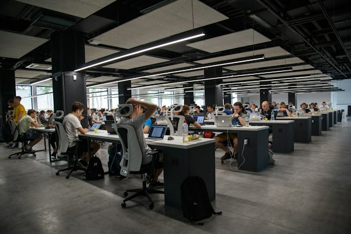

About MCA Association
The Association of Computer Enthusiasts (ACE) is the vibrant student technical body of the Department of Computer Applications at MCET. Governed by elected student representatives under the mentorship of faculty advisors, ACE acts as a bridge between academic coursework and real-world technology developments.
The association provides a platform for MCA students to refine their software engineering capabilities, build teamwork and leadership skills, organize technical conventions, and engage in open-source and competitive programming communities.
Throughout the academic year, ACE coordinates technical talks, peer-led coding sessions, hackathons, and industrial excursions to premier IT hubs across south India.

Association Vision
"To nurture an inspiring student ecosystem that cultivates technological curiosity, collaborative problem solving, and professional leadership in computing."
Association Mission
- To organize hands-on technical workshops on cutting-edge software paradigms.
- To encourage peer-to-peer programming circles, hackathons, and open-source contributions.
- To build leadership, public speaking, and event management abilities among postgraduate students.
- To connect students with alumni and IT industry mentors through regular interaction sessions.
Office Bearers (2025 - 2026)
Student leadership committee driving department activities and technical events
Prof. Meera Nair
Associate Professor, Dept. of Computer Applications
Kiran S. Kumar
S4 MCA (Final Year)
Anjali Ramesh
S4 MCA (Final Year)
Vivek V. Nair
S2 MCA (First Year)
Reshma B.
S4 MCA (Final Year)
Gokul Prasad
S2 MCA (First Year)
Student Activities
Year-round initiatives designed to cultivate practical skills and collaborative synergy
1. Coding Competitions
Regular algorithmic contests and competitive programming rounds hosted on platforms like HackerRank and LeetCode to sharpen problem solving speed and logic.
2. Technical Workshops
Hands-on sessions on modern web frameworks, Python for data analytics, containerization with Docker, Git version control, and cloud computing deployment.
3. Expert Seminars & Webinars
Invited technical talks by IT industry architects, alumni entrepreneurs, and cybersecurity researchers sharing real-world software engineering practices.
4. Hackathons & Ideathons
Inter-department and inter-college software marathons where teams build functioning full-stack software prototypes to solve civic or environmental challenges.
5. Industrial Visits
Annual study tours and industrial visits to leading software technology parks (Technopark Thiruvananthapuram, Infopark Kochi) and data centers.
6. Cultural & Social Outreach
Community digital literacy campaigns for rural schools, celebration of National Technology Day, Teacher's Day, and departmental farewell events.
Signature Annual Events
Key technical festivals and symposia coordinated by the association
ByteCraft - Annual National Tech Fest
A flagship two-day technical symposium featuring web design competitions, coding face-offs, tech quizzes, gaming arenas, and paper presentations with participation from colleges across South India.
Project Expo & Demo Day
An exhibition showcasing final semester MCA capstone projects, mobile applications, and IoT software prototypes evaluated by a jury of industry architects.
Alumni Connect & Career Mentorship
Interactive panel sessions where distinguished alumni share corporate interview preparation strategies, resume building tips, and insights on emerging tech careers.
Recent Association Achievements
- First Prize in Smart Kerala Hackathon 2025: MCA student team developed an AI-powered municipal waste tracking mobile application and won the state-level championship.
- 100% Student Participation in Open Source: Over 45 MCA students successfully contributed pull requests during the global Hacktoberfest open-source celebration.
- Best Student Chapter Recognition: ACE was awarded the Certificate of Appreciation by the Computer Society of India (CSI) Trivandrum Chapter for organizing impactful technical workshops.
- Paper Publications: Six student teams co-authored research publications alongside faculty members in Scopus-indexed national and international conferences.